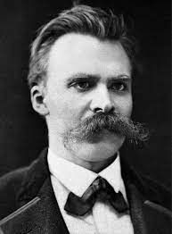
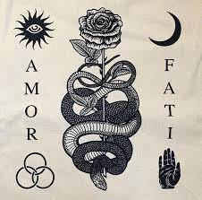

Friedrich Nietzsche

Friedrich Wilhelm Nietzsche foi um filósofo, filólogo, crítico cultural, poeta e compositor prussiano do século XIX, nascido na atual Alemanha.
Amor Fati

'amor ao destino', 'amor ao fado'. No estoicismo e na filosofia de Friedrich Nietzsche, significa ou trata-se de aceitação integral da vida e do destino humano mesmo em seus aspectos mais cruéis e dolorosos – aceitação que só um espírito superior é capaz.